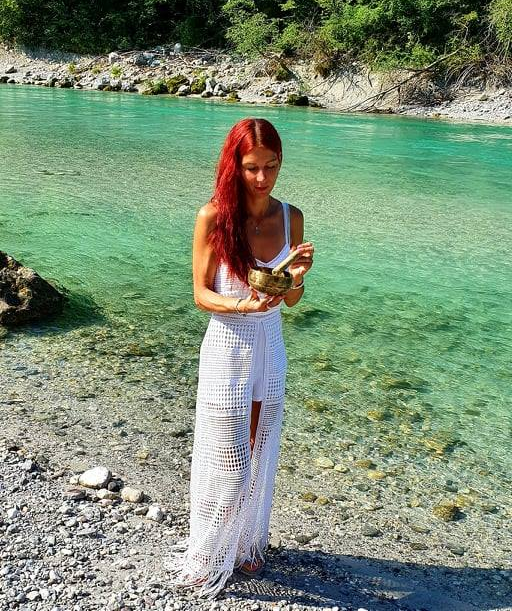
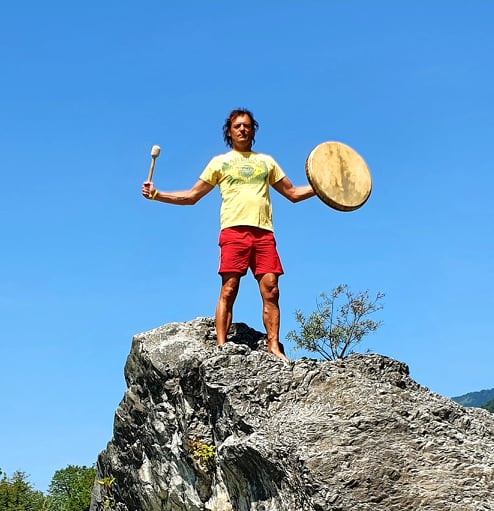

Shantaya Rose
Duhovna pot, osebnostni razvoj in intuicija me spremljajo že od rane mladosti. Veliko let dela na sebi, izobraževanja, nabiranje duhovnega znanja in mnoge izkušnje so mi pokazale pot, kako lahko preko različnih tehnik pomagam ljudem do zdravja, ljubezni, osebnostnega zadovoljstva in miru. Predvsem pa, kako začutiti sebe in svoje notranje veselje.
Sem terapevtka naravnega zdravljenja, mojstrica in učiteljica Reiki delavnic ter seminarjev, intuitivna svetovalka in regresoterapevtka. Izvajam energetsko čiščenje prostora in vzpostavljanje harmonije v njem. Rada izvajam tudi dušne readinge, Tarot vpoglede in usmeritve ter branje ostalih orakeljskih kart.
Nudim tudi osebno zaščito, energetsko podporo pri različnih izzivih, lahko tudi na daljavo. Poznam tudi različne svete invokacije in rituale kot so vlivanje svinca, čiščenje energij in karme, izdelava raznih talismanov, odpravljanje urokov in elementalov. Zelo rada se povezujem z materjo Naravo, Devinskim in Angelskim kraljestvom. Blizu so mi tudi Hebrejščina, Kriya joga in Kundalini energija.
Dosedanje izkušnje sem si pridobivala pri terapevtki naravnega zdravljenja Bebi Splichal, duhovnemu učitelju in predavatelju ezoterike v misterični šoli, škofu gnostične cerkve, Aristidu Havličku-Tiliju in nenazadnje tudi pri Amazonskih Indijancih, ašramih, templjih, šoli jogi in teozofije.
Kar lahko sanjate, lahko tudi uresničite (Walt Disney).
Sem terapevtka naravnega zdravljenja, mojstrica in učiteljica Reiki delavnic ter seminarjev, intuitivna svetovalka in regresoterapevtka. Izvajam energetsko čiščenje prostora in vzpostavljanje harmonije v njem. Rada izvajam tudi dušne readinge, Tarot vpoglede in usmeritve ter branje ostalih orakeljskih kart.
Nudim tudi osebno zaščito, energetsko podporo pri različnih izzivih, lahko tudi na daljavo. Poznam tudi različne svete invokacije in rituale kot so vlivanje svinca, čiščenje energij in karme, izdelava raznih talismanov, odpravljanje urokov in elementalov. Zelo rada se povezujem z materjo Naravo, Devinskim in Angelskim kraljestvom. Blizu so mi tudi Hebrejščina, Kriya joga in Kundalini energija.
Dosedanje izkušnje sem si pridobivala pri terapevtki naravnega zdravljenja Bebi Splichal, duhovnemu učitelju in predavatelju ezoterike v misterični šoli, škofu gnostične cerkve, Aristidu Havličku-Tiliju in nenazadnje tudi pri Amazonskih Indijancih, ašramih, templjih, šoli jogi in teozofije.
Kar lahko sanjate, lahko tudi uresničite (Walt Disney).

Maksi Mukunda
Vsi smo del zemlje in zemlja je del nas. Vsi sodimo v isto družino. Tkanina življenja, ki nas je ustvarila, je ena sama. Vsi sobivamo in vse je v ravnovesju. Energija, ki se pretaka, je čudovita in njena moč je neskončna. Vedno sem čutil in vedno sem vedel, da obstaja še nekaj več kot le to, kar vidimo, slišimo, otipamo ali zavohamo. Pot me je vodila v svet energij “Reiki”, v svet narave, v odkrivanje njenih energij in njene moči, preko športa pa tudi v iskanje skrajnih zmožnosti človeškega duha in telesa.
Sem mojster Reikija, regresije, hoje po žerjavici, intuicije zaznavanja prostora in časa sedmih dimenzij, čiščenja urokov in energij s telesa, duše in prostora. Izvajam stik z onstranstvom, energijske slike telesa in podpora, terapije ter vpogled v Tarot ter usmeritve.
Svoje življenjske izkušnje s področja poznavanja energij človeka in športa z velikim veseljem delim z vami, da skupaj najdemo želeno pot.
"Modrost prihaja v sanjah. Ko nehaš sanjati - nehaš živeti." Neznani indijanski poglavar
Sem mojster Reikija, regresije, hoje po žerjavici, intuicije zaznavanja prostora in časa sedmih dimenzij, čiščenja urokov in energij s telesa, duše in prostora. Izvajam stik z onstranstvom, energijske slike telesa in podpora, terapije ter vpogled v Tarot ter usmeritve.
Svoje življenjske izkušnje s področja poznavanja energij človeka in športa z velikim veseljem delim z vami, da skupaj najdemo želeno pot.
"Modrost prihaja v sanjah. Ko nehaš sanjati - nehaš živeti." Neznani indijanski poglavar

Matijas Slivnik
Sem Matijas Slivnik, diplomirani naturopat in iridolog, že od malih nog pa tudi velik ljubitelj narave in športne rekreacije ter glasbenik.
Vse to me je in me še vedno navdihuje ter mi daje posebno vibracijo, ki jo počasi in vztrajno dojemam z raziskovanjem in tudi delom na sebi, ter sedaj že desetletje nudenjem pomoči in terapevtski podpori drugim.
Zaključen imam mednarodno certificirani študijski program smeri Naturopatija. Po končanem študiju pa sem se udeležil tudi dodatnih izobraževanj in prakse iz Klinične Naturopatije, ter se dopolnjeval z znanji tudi iz tujine (Anglija, Češka, Italija). Znanja konstantno tudi nadgrajujem ter se izobražujem z različnih področjih preventivne oskrbe iz naravne medicine, zdravljenja ter prehrane.
Trenutno sem v procesu certificiranja s področja dietetike - Dieta GIFT (Accademia di Medicina di Segnale, Italija), pod vodstvom italijanskega zdravnika in prehranskega strokovnjaka dr. med. Luca Specianija.
Dodatne kvalifikacije: Terapevt manualne metode naravnega zdravljenja VITO, certificirani energoterapevt (Tehnike Brennan Healing Science® iz šole dr. med. Suzane Landripet), športni maser ter član Združenja naturopatov Slovenije.
Vse to me je in me še vedno navdihuje ter mi daje posebno vibracijo, ki jo počasi in vztrajno dojemam z raziskovanjem in tudi delom na sebi, ter sedaj že desetletje nudenjem pomoči in terapevtski podpori drugim.
Zaključen imam mednarodno certificirani študijski program smeri Naturopatija. Po končanem študiju pa sem se udeležil tudi dodatnih izobraževanj in prakse iz Klinične Naturopatije, ter se dopolnjeval z znanji tudi iz tujine (Anglija, Češka, Italija). Znanja konstantno tudi nadgrajujem ter se izobražujem z različnih področjih preventivne oskrbe iz naravne medicine, zdravljenja ter prehrane.
Trenutno sem v procesu certificiranja s področja dietetike - Dieta GIFT (Accademia di Medicina di Segnale, Italija), pod vodstvom italijanskega zdravnika in prehranskega strokovnjaka dr. med. Luca Specianija.
Dodatne kvalifikacije: Terapevt manualne metode naravnega zdravljenja VITO, certificirani energoterapevt (Tehnike Brennan Healing Science® iz šole dr. med. Suzane Landripet), športni maser ter član Združenja naturopatov Slovenije.
Saša Močnik
Kdo sem? Sem kot ti, popotnica skozi življenje. Sem pot, ki me orisuje in preko katere se izražam skozi številne vloge svoje biti. Sem ženska, mama, partnerica, prijateljica, ustvarjalka in potepinka, sem ljubiteljica lepega in naravnega. Rada imam potepanja in potovanja vseh oblik in dolžin, ljubim dobre knjige in trenutke preživete v družbi toplih ljudi. Ljubim svojega otroka in družino, ki je moj pristan in hkrati neprecenljivi dar največjih spoznanj, učenj ter spreminjanj same sebe. Del sebe sem našla tudi v jogi, ki je skupaj z integralno meditacijo že dolgo nepogrešljiv del moje dnevne rutine in tudi pot k notranji stabilnosti. Umetnost, ustvarjanje, risanje in fotografija pa so moja večna tiha strast in je nemalokrat tesno povezana z naravo, ki jo obožujem v vseh njenih oblikah.V naravi ter njenih zakonitostih se namreč skrivajo odgovori na mnoga naša vprašanja, saj smo z njo in njenimi ritmi neločljivo povezani.
DJOTIŠ je več kot 5000 let stara modrost o času in naravnih ritmih, zapisana v Vedah. Znanje, ki razodeva povezanost človeka in Vesolja nam preko prepoznavanja planetarnih vzorcev v trenutku našega rojstva ponuja dragocene namige za razumevanje našega življenjskega potovanja in nas samih. Čeprav nam omogoča prepoznavati preteklost, dogajanje v sedanjosti in vidi v prihodnost, napovedovanje oziroma 'prerokovanje' ni njen namen. Beseda djotiš pomeni "svetloba" in je čudovito orodje, pomoč, ki osvetljuje naše videnje in nam pomaga razumeti, kako pod vplivom svobodne volje, z usmerjenim delovanjem in s sprejemanjem boljših odločitev pozitivno spreminjamo svojo sedanjost ter si kreiramo lepšo prihodnost. Sočasno pa nam pomaga razumeti razliko med stvarmi, ki jih lahko spreminjamo in stvarmi, ki jih je potrebno sprejeti, saj je majhen del našega življenja določen vnaprej.
VASTU je tako kot djotiš del starodavnega vedskega znanja. Je arhitektura, ki se ravna po smernicah narave in nas usmerja kako urediti naše bivalno okolje, delovni prostor ali vrt, da bodo v skladu z naravnimi zakonitostmi, s petimi elementi, naravnimi silami ter našimi individualnimi potrebami ter značilnostmi. Namen vsega tega je, da se ustvari potrebna harmonija in pravilen pretok življenjske energije, kar posledično spodbuja zdravje, vitalnost, blaginjo, poveča našo ustvarjalnost, izboljša odnose… Včasih so dovolj že drobne korekcije, ki pomagajo odpreti vrata želenim spremembam.
Če te kliče želja po pozitivni spremembi, mi lahko pišeš ali pokličeš. Ne morem ti je pričarati, lahko pa ti pokažem pot, da si jo ustvariš sam.
Kamor usmerjam svojo pozornost, to živim, to sem jaz. (Buddha)
DJOTIŠ je več kot 5000 let stara modrost o času in naravnih ritmih, zapisana v Vedah. Znanje, ki razodeva povezanost človeka in Vesolja nam preko prepoznavanja planetarnih vzorcev v trenutku našega rojstva ponuja dragocene namige za razumevanje našega življenjskega potovanja in nas samih. Čeprav nam omogoča prepoznavati preteklost, dogajanje v sedanjosti in vidi v prihodnost, napovedovanje oziroma 'prerokovanje' ni njen namen. Beseda djotiš pomeni "svetloba" in je čudovito orodje, pomoč, ki osvetljuje naše videnje in nam pomaga razumeti, kako pod vplivom svobodne volje, z usmerjenim delovanjem in s sprejemanjem boljših odločitev pozitivno spreminjamo svojo sedanjost ter si kreiramo lepšo prihodnost. Sočasno pa nam pomaga razumeti razliko med stvarmi, ki jih lahko spreminjamo in stvarmi, ki jih je potrebno sprejeti, saj je majhen del našega življenja določen vnaprej.
VASTU je tako kot djotiš del starodavnega vedskega znanja. Je arhitektura, ki se ravna po smernicah narave in nas usmerja kako urediti naše bivalno okolje, delovni prostor ali vrt, da bodo v skladu z naravnimi zakonitostmi, s petimi elementi, naravnimi silami ter našimi individualnimi potrebami ter značilnostmi. Namen vsega tega je, da se ustvari potrebna harmonija in pravilen pretok življenjske energije, kar posledično spodbuja zdravje, vitalnost, blaginjo, poveča našo ustvarjalnost, izboljša odnose… Včasih so dovolj že drobne korekcije, ki pomagajo odpreti vrata želenim spremembam.
Če te kliče želja po pozitivni spremembi, mi lahko pišeš ali pokličeš. Ne morem ti je pričarati, lahko pa ti pokažem pot, da si jo ustvariš sam.
Kamor usmerjam svojo pozornost, to živim, to sem jaz. (Buddha)
Tina Medved
Ljubim Življenje in našo Mati Zemljo. Narava mi vedno da vse kar potrebujem. Zavetje, varnost, razumevanje in sprejemanje take kakršna sem. Naučila me je opazovati in slišati tiste preproste stvari na katere smo ljudje skorajda že pozabili.
Zaljubljena sem v energije Run, v energije planetov in Astrologijo. Vse to uporabljam pri svojih energijskih terapijah, ki jim dodajam še znanje preprostih šamanskih tehnik, znanje in razumevanje Svete Geometrije in Geomantije v okviru staroverstva in svetih krajev.
Z veseljem ponudim podporo in pomoč, če si boste tega kdaj zaželeli in začutili, da bi se radi povezali z menoj.
Objem, Tina.
Zaljubljena sem v energije Run, v energije planetov in Astrologijo. Vse to uporabljam pri svojih energijskih terapijah, ki jim dodajam še znanje preprostih šamanskih tehnik, znanje in razumevanje Svete Geometrije in Geomantije v okviru staroverstva in svetih krajev.
Z veseljem ponudim podporo in pomoč, če si boste tega kdaj zaželeli in začutili, da bi se radi povezali z menoj.
Objem, Tina.
Silva-Srebrna Puščica
Sem Silva - Srebrna Puščica, poznana kot tolmačka živalskih sporočil.
Starodavni šamani so že tisočletja nazaj vedeli, da živali niso zgolj člen v ekosistemu, ampak so v njihovo naravo zapisani vsi večni in nespremenljivi duhovni zakoni, ki človeku pomagajo na poti duhovne rasti. Vsaka žival prinaša sporočilo in nobene ne srečamo po naključju, pa naj bo v naravi ali kakorkoli drugače.
Ko z mano sedite na šamanskem readingu, se vam, kot energijskemu bitju, vedno odslikajo tiste živali, ki so najboljši približek vašega trenutnega energijskega stanja. Pomagam vam, da pridete v trenutek tukaj in zdaj, kjer se ta stik sploh lahko zgodi, vsebina redinga pa je odvisna od vaših vprašanj in narave živalskih vodnikov, ki so tedaj z nama.
Delam z lastnimi živalskimi kartami in sporočila razlagam na najbolj preprosto možen način. Moja posebna strast je tudi tematika "pot duše dvojčice", skozi katero prav tako razbijam tabuje, da ne gre za iskanje ljubezni, ampak da se duša dvojčica z nami uskladi sama od sebe, ko na prvo mesto postavimo osebne vrednote in življenjsko vizijo, za katero bi si prizadevali v vsakem primeru.
Za reading ali posvet mi lahko pišete na gozdna.zenska@gmail.com. Najraje delam v živo in se veselim vašega obiska (lahko pridete sami ali v dvoje), v primeru skupine pa vas lahko obiščem tudi jaz. Ko sporočila razlagam v krogu, igra vlogo energija skupine in je vsako sporočilo tako za dotičnega posameznika kot za tistega, ki se ga določene besede dotaknejo.
Niste sami. Stvarstvo Vas Živi!
Starodavni šamani so že tisočletja nazaj vedeli, da živali niso zgolj člen v ekosistemu, ampak so v njihovo naravo zapisani vsi večni in nespremenljivi duhovni zakoni, ki človeku pomagajo na poti duhovne rasti. Vsaka žival prinaša sporočilo in nobene ne srečamo po naključju, pa naj bo v naravi ali kakorkoli drugače.
Ko z mano sedite na šamanskem readingu, se vam, kot energijskemu bitju, vedno odslikajo tiste živali, ki so najboljši približek vašega trenutnega energijskega stanja. Pomagam vam, da pridete v trenutek tukaj in zdaj, kjer se ta stik sploh lahko zgodi, vsebina redinga pa je odvisna od vaših vprašanj in narave živalskih vodnikov, ki so tedaj z nama.
Delam z lastnimi živalskimi kartami in sporočila razlagam na najbolj preprosto možen način. Moja posebna strast je tudi tematika "pot duše dvojčice", skozi katero prav tako razbijam tabuje, da ne gre za iskanje ljubezni, ampak da se duša dvojčica z nami uskladi sama od sebe, ko na prvo mesto postavimo osebne vrednote in življenjsko vizijo, za katero bi si prizadevali v vsakem primeru.
Za reading ali posvet mi lahko pišete na gozdna.zenska@gmail.com. Najraje delam v živo in se veselim vašega obiska (lahko pridete sami ali v dvoje), v primeru skupine pa vas lahko obiščem tudi jaz. Ko sporočila razlagam v krogu, igra vlogo energija skupine in je vsako sporočilo tako za dotičnega posameznika kot za tistega, ki se ga določene besede dotaknejo.
Niste sami. Stvarstvo Vas Živi!
Mariza Jukič
Že kot zelo mlada sem bila iskalka.Zanimalo me je vse kar je bilo drugačno od povprečja, pa naj so bili to ljudje, knjige, dogodki. Povprečje me je dolgočasilo.
Pred več kot 30 leti sem začela z Reikijem.
Kmalu zatem sem srečala svojega učitelja, velikega humanitarca in mirovnika Sri Sri Ravi Shankarja. Njegova ideja, vizija, da bi bil svet brez stresa, nasilja in kot ena velika družina, vse to me je zelo pritegnilo in začela sem slediti njegovemu učenju. V vseh teh letih sem pod okriljem Art of Living organizacije, pridobila veliko znanja, izkušenj in različnih veščin.
Postala sem učiteljica programov kot so joga, dihalne tehnike, intuitivni vpogledi, za različne ciljne skupine. Seminarje sem delala s šolniki, starši otrok, Kralji ulice, splošno populacijo, največ pa sem delala z otroci v šolah in sicer delavnice 'Nenasilje v šoli'. Podajam znanje, katerega otroci še kako potrebujejo in se ga v učnih načrtih pogreša.
Zadnja leta delam na opolnomočenju žensk. Z znanjem, ki ga pridobijo na naših srečanjih, si ženske lahko pomagajo premagovati raznovrstne tegobe, izzive v vsakdanjem življenju.
Nudim tudi energetsko podporo in blessinge, za katere sem bila inicirana od svojega učitelja. Blessingi odsevajo v naših življenjih notranji mir in prikličejo več blagoslovov.
Blizu mi je tudi svet čarovnije, magije in vse kar je očem nevidno.
Rada pogledam v orakeljske karte, preko katerih vam z veseljem predam sporočila.
In seveda, da ne pozabim na globoko povezanost z Mati Zemljo in rituale, katere sem pridobila na raznih šamanskih potovanjih.
Pred več kot 30 leti sem začela z Reikijem.
Kmalu zatem sem srečala svojega učitelja, velikega humanitarca in mirovnika Sri Sri Ravi Shankarja. Njegova ideja, vizija, da bi bil svet brez stresa, nasilja in kot ena velika družina, vse to me je zelo pritegnilo in začela sem slediti njegovemu učenju. V vseh teh letih sem pod okriljem Art of Living organizacije, pridobila veliko znanja, izkušenj in različnih veščin.
Postala sem učiteljica programov kot so joga, dihalne tehnike, intuitivni vpogledi, za različne ciljne skupine. Seminarje sem delala s šolniki, starši otrok, Kralji ulice, splošno populacijo, največ pa sem delala z otroci v šolah in sicer delavnice 'Nenasilje v šoli'. Podajam znanje, katerega otroci še kako potrebujejo in se ga v učnih načrtih pogreša.
Zadnja leta delam na opolnomočenju žensk. Z znanjem, ki ga pridobijo na naših srečanjih, si ženske lahko pomagajo premagovati raznovrstne tegobe, izzive v vsakdanjem življenju.
Nudim tudi energetsko podporo in blessinge, za katere sem bila inicirana od svojega učitelja. Blessingi odsevajo v naših življenjih notranji mir in prikličejo več blagoslovov.
Blizu mi je tudi svet čarovnije, magije in vse kar je očem nevidno.
Rada pogledam v orakeljske karte, preko katerih vam z veseljem predam sporočila.
In seveda, da ne pozabim na globoko povezanost z Mati Zemljo in rituale, katere sem pridobila na raznih šamanskih potovanjih.
Vesna Slivnik
Od nekdaj se je v mojih mislih porajalo nešteto vprašanj, vseskozi sem se soočala z raziskovalnim duhom, verjela v mističnost.
Neka nevidna sila me je vedno znova spodbujala in usmerjala. Sledila sem poti. Moja empatičnost do ljudi se je izkazovala vse skozi. Skrb za šibkejše, občutek do vseh živih bitij, želja po harmoniji, razumevanju in pristnih odnosih v ožji družini in širše so sestavljali moj mozaik. S pomočjo širjenja znanja, globjih vpogledov, obiskovanja raznih izobraževanj se je moje obzorje nenehno širilo in bogatilo. Izkušnje pa so osebno rast dodatno začinile.
Pot me je pripelja do Reiki energij in z radostjo in hvaležnostjo sem ta mistični žarek spustila skozi kanal, da je le ta dosegel tistega, ki si je to želel.
Še z marsičem sem se srečala, a naj omenim tehniko Access Bars, ki je nežna tehnika, kjer z dotikom 32 točk na glavi možgani po 15 minutah terapije preidejo v theta stanje, kar pomeni stanje globoke relaksacije, ki aktivira samozdravljenje telesa in odpira prostor zavedanja v našem življenju. Dogaja se razelektritev in na ta način se sprostijo vse energije, ki so ujete v možganih in telesu. Življenje mi je ponudilo pridobiti znanje zemeljske frekvence, ki izredno blagodejno deluje na naše možgane. Ko smo povezani s to frekvenco dosežemo naravni pulz naše DNK. Ta terapija lahko popolnoma odpravi stres iz našega telesa, pospeši miselne procese, spomin, koncentracijo in močno okrepi naše zavedanje. Najnovejše medicinske raziskave potrjujejo, da se naše telo zdravi samo in da z načinom razmišljanja vplivamo na svoje celice, zdravje in življenje. Nešteto možnosti je, s katerimi lahko povečamo našo učinkovitost, produktivnost, zavzetost, notranje zadovoljstvo in srečo. Z veseljem dodam svoj prispevek tistemu, ki ga pokliče, saj imam vse podprto in tudi uradno certificirano ;).
Nikoli ni prava zgolj ena in edina stvar, ampak vse to je skupek veličine, globine in širine. Vredno je raziskovati in odkrivati, še lepše pa pomagati in opazovati čarobnost sprememb in srečnih obrazov.
Objem vsem :)
Vesna
Neka nevidna sila me je vedno znova spodbujala in usmerjala. Sledila sem poti. Moja empatičnost do ljudi se je izkazovala vse skozi. Skrb za šibkejše, občutek do vseh živih bitij, želja po harmoniji, razumevanju in pristnih odnosih v ožji družini in širše so sestavljali moj mozaik. S pomočjo širjenja znanja, globjih vpogledov, obiskovanja raznih izobraževanj se je moje obzorje nenehno širilo in bogatilo. Izkušnje pa so osebno rast dodatno začinile.
Pot me je pripelja do Reiki energij in z radostjo in hvaležnostjo sem ta mistični žarek spustila skozi kanal, da je le ta dosegel tistega, ki si je to želel.
Še z marsičem sem se srečala, a naj omenim tehniko Access Bars, ki je nežna tehnika, kjer z dotikom 32 točk na glavi možgani po 15 minutah terapije preidejo v theta stanje, kar pomeni stanje globoke relaksacije, ki aktivira samozdravljenje telesa in odpira prostor zavedanja v našem življenju. Dogaja se razelektritev in na ta način se sprostijo vse energije, ki so ujete v možganih in telesu. Življenje mi je ponudilo pridobiti znanje zemeljske frekvence, ki izredno blagodejno deluje na naše možgane. Ko smo povezani s to frekvenco dosežemo naravni pulz naše DNK. Ta terapija lahko popolnoma odpravi stres iz našega telesa, pospeši miselne procese, spomin, koncentracijo in močno okrepi naše zavedanje. Najnovejše medicinske raziskave potrjujejo, da se naše telo zdravi samo in da z načinom razmišljanja vplivamo na svoje celice, zdravje in življenje. Nešteto možnosti je, s katerimi lahko povečamo našo učinkovitost, produktivnost, zavzetost, notranje zadovoljstvo in srečo. Z veseljem dodam svoj prispevek tistemu, ki ga pokliče, saj imam vse podprto in tudi uradno certificirano ;).
Nikoli ni prava zgolj ena in edina stvar, ampak vse to je skupek veličine, globine in širine. Vredno je raziskovati in odkrivati, še lepše pa pomagati in opazovati čarobnost sprememb in srečnih obrazov.
Objem vsem :)
Vesna